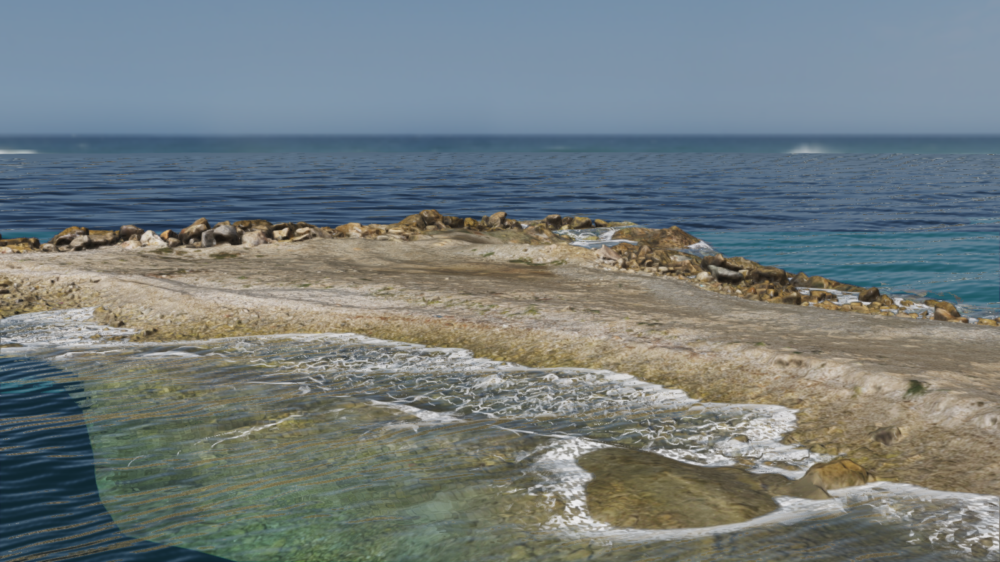
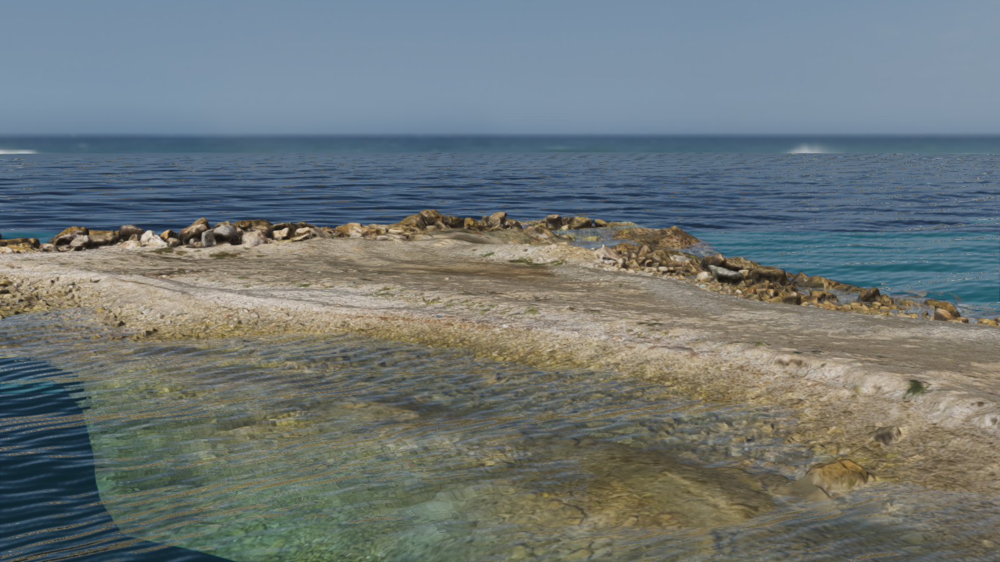
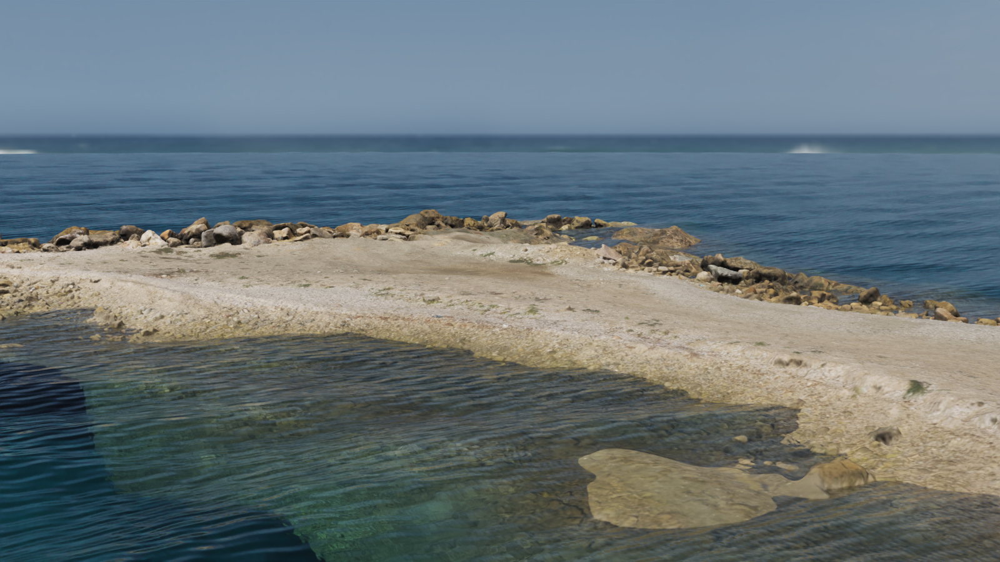
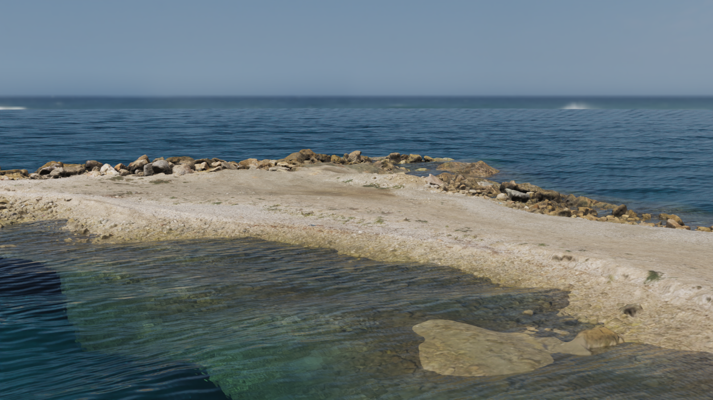

Coastal water validation¶
The current coastal result combines guarded refraction, a horizontal shore band and a broader micro-wave field. The practical target is stable, detailed real-time water. Distant reflections remain more regular than the reference, and filtered-normal roughness is an approximation; passing geometric and temporal controls does not establish photographic fidelity.
Broader micro detail¶
Twelve wavelengths spanning approximately 3 to 51 centimeters replace four dominant carriers. Directions and phases vary deterministically, reducing parallel streaks near the camera. Equal slope weights preserve the previous sum of squared coefficients, 0.30. Macro displacement, physical impact ripples, foam, lighting and the roughness mapping remain unchanged. This is a finite artistic height field, not a fluid or ocean-spectrum simulation.
Both pictures below use the same new field, frozen camera, 0.5-second clock, exposure 0.8 and foam disabled. The Cycles control uses analytic, ray-facing macro/micro gradients and 96 samples. The older four-carrier references below remain as historical controls; changing the wave field also changes the reference, so scores across those two targets do not prove a general fidelity gain.
| Runtime, twelve micro waves | Matched analytic-normal Cycles control |
|---|---|
| Region | Rectangle | RGB MAE | RGB SSIM |
|---|---|---|---|
| Distant water | [40, 260, 1560, 325] | 10.256 | 0.5699 |
| Foreground water | [200, 740, 1350, 880] | 28.602 | 0.6621 |
Four near-origin positions and animation times check resolved slopes against independent height finite differences. Separate controls cover wavelength/direction participation and transfer of unresolved micro energy to variance. Their tolerance is unchanged from the earlier energy probe. Both focused micro cases also pass on llvmpipe. These controls do not establish gradient accuracy at arbitrary large world coordinates.
A render-only ABBA run at 1600 by 900 measured medians of 15.998 and 16.150 ms for the previous four-carrier version, versus 16.068 and 16.316 ms for twelve carriers. The pair averages are 16.074 and 16.192 ms. The 0.118 ms difference is smaller than the candidate repeat spread; it is not a precise overhead estimate. Do not combine this thermal session with the earlier costs below.
An internal fixed-step recording was checked at frames 0, 90, 180 and 239: eight seconds, 30 fps, 240 frames, rendered at 3840 by 2160 and downsampled to 1920 by 1080. The complete render suite passes 84 cases and 655741 assertions with this detail field.
Horizontal shore band¶
Optical path length previously placed foam across broad shallow terraces. The band now uses
the horizontal distance to the intersection of visible bottom and water tangent planes.
foam_width is a horizontal width in meters, with 15 percent spatial reach variation.
Parallel shallow plateaus receive no foam. Centimeter pores fade to their expected mean
coverage when unresolved; even dense coverage retains at least 28 percent of the transmitted light.

This is a local screen-space estimate, not a complete shoreline field. Discontinuous or missing depth suppresses coverage; curved terrain can produce gaps or differ from the nearest shore. The pattern is stationary and has no advection, accumulation or breaking-wave simulation.
Physical controls require support inside 0.5 meters and none beyond 1.25 meters for a nominal one-meter band, across three bottom slopes and two camera angles. Separate controls cover a sloping water surface over flat ground, a vertical wall and a shallow plateau without a shore. Close-up pores retain the original minimum counts and transmission requirement. A separate frequency probe rejects decimeter clouds; minified coverage agrees with a resolved area quadrature.
Before the micro-detail update, the complete render suite passed 83 cases and 655739 assertions. The ten initial foam cases also pass on NVIDIA and llvmpipe. The two additional geometry controls pass on both renderers. The new helpers received an independent correctness review; this does not establish photographic acceptance.
Restoring optical-path coverage and decimeter pores makes all five selected negative controls fail: the flat plateau gains roughly 50000 changed pixels, the visible band edge moves by 0.5 to 0.8 meters across slope/camera changes, and the fine-pore probe finds only 31 crossings instead of the required 100. These controls retain the same geometric and frequency thresholds.
Optical validation correction¶
Earlier image metrics in this study are withdrawn: the preview helper changed the clock reset in recording shutdown instead of setting the clock before normal presentation. Those previews therefore used wall time. Automated render tests, internal video recordings and the frame-time benchmarks set their clocks independently and are unaffected. Replacement previews must pass a repeated-capture check before being used for image comparisons.
Historical four-carrier optical study¶
Both views use the same scanned coast, camera, sun, sky, seven-component wave field and 0.5-second clock at 1600 by 900 pixels. Foam is disabled in both optical views. Exposure is 0.8 with the same display transform; there is no alignment or exposure fitting. The corrected runtime capture is repeated in a separate process: the distant-water rectangle is pixel-identical, while five foreground pixels differ by one RGB byte. Its clock is set before normal frame presentation, independently of elapsed loading or rendering time. The reference uses Cycles with 32 samples, denoising, IOR 1.333, roughness 0.07 and the same absorption coefficients. Its isotropic volume scattering is a physical approximation of the runtime body-light term; atmospheric fog and derivative filtering do not have identical models. The micro-height field is represented by bump shading in the reference. The reference's macro normals come from the displaced radial mesh, while the runtime uses analytic gradients. At a radius of 100 meters its radial and tangential edges are about 1.58 and 1.64 meters, exceeding the shortest macro wavelength of 0.90 meters. Distant normal convergence must therefore be checked before attributing the image difference to shading alone.
| Runtime | Cycles reference |
|---|---|
 |
 |
The finite scan ends above a separate deeper substrate. Both pictures show that geometric edge; it must be distinguished from duplicated or displaced refraction samples.
Fixed rectangles exclude the shore and sky. Coordinates are [left, top, right, bottom] in
original pixels. MAE is the mean absolute RGB byte difference. SSIM uses an 11-pixel Gaussian
window with sigma 1.5, population covariance, constants 0.01 and 0.03, and a five-pixel border
removed from the result. Values below are computed from the lossless pictures above.
| Region | Rectangle | RGB MAE | RGB SSIM |
|---|---|---|---|
| Distant water | [40, 260, 1560, 325] | 10.213 | 0.5131 |
| Foreground water | [200, 740, 1350, 880] | 29.062 | 0.6843 |
These values replace the withdrawn wall-clock comparisons. They do not establish photographic acceptance or a causal improvement over earlier shader variants, which need fresh timed captures.
A separate normal-field control keeps the camera, displaced mesh, material, illumination and display transform, but replaces smooth mesh normals plus bump with the analytic total macro/micro height gradient. Its normal is oriented per incoming ray, matching Cycles' geometry-normal convention. Independent finite differences check that gradient. This control addresses mesh normal undersampling; it does not make the runtime's BSDF, screen-space visibility or fog identical.

| Region | Runtime versus analytic-normal control: RGB MAE | RGB SSIM |
|---|---|---|
| Distant water | 10.415 | 0.5643 |
| Foreground water | 28.459 | 0.7075 |
The control's 32-versus-96 sample difference is 3.371 MAE / 0.9280 SSIM at distance and 2.580 / 0.9482 in the foreground. Sampling error is not zero; small candidate deltas need further integration checks. Both the original reference and this control are retained.
Correctness controls¶
- Isolate screen-space reflection from transmission using submerged and exposed emissive objects.
- Compare transmitted silhouettes with an independent CPU Snell-law intersection, including supported interior coverage and false copies outside the postprocess footprint.
- Compare absorption outside a partially exposed object's silhouette against the identical unobstructed flat or inclined floor.
- Reproduce a missed inclined-depth root when search and refinement use different samplers.
- Require a soft, irregular foam band, open water pockets and partial bottom transmission.
- Check displacement bounds, analytic gradients, stationary clocks and filtered normal energy.
The current full render suite passed 84 cases and 655741 assertions. The previous full unit run passed 1215 cases; the current shader-generation checks pass 14 cases and 147 assertions. Local shader-validation binaries rebuild shader construction and changed tests while reusing unchanged CPU libraries. Clean builds remain a CI requirement. The actual GLES shader pairs for lighting, motion, depth, particle shadows and temporal resolve all compiled and linked on a native GLES context. This does not replace an Android package build.
Negative controls remove micro-normal variance or restore the continuous foam coverage floor: they respectively lose energy at 4608 distant probe pixels and produce no open pockets in 1089 shallow-shelf samples. Restoring nearest-depth bracketing makes the inclined-root probe return the wrong sample coordinate. The corrected versions pass those checks.
Smooth specular normalization¶
The direct-light GGX distribution now preserves narrow specular lobes. Its previous additive denominator floor suppressed their energy: at roughness 0.07, the analytic peak is about 13257, while the floored expression returned 0.24. The equivalent positive denominator is evaluated without that floor; callers already bound perceptual roughness to at least 0.045. This intentionally affects direct specular lighting on all materials, including water. It does not change the sky prefilter or establish agreement with the coastal reference.
A GPU probe checks the production distribution against an independent double-precision reference at roughness 0.045, 0.07, 0.15 and 0.4, using 512 projected-distribution samples each. Both peak and projected mass checks pass on NVIDIA and software rendering. Restoring the old denominator fails all eight peak/mass checks. Foam envelope checks average 21 shoreline profiles so individual pores cannot determine band width; the existing width, softness and independent porosity requirements remain unchanged. The correction received a separate correctness review before publication.
The historical four-carrier runtime pictures include both this correction and the horizontal shore band. Foam is disabled for the optical comparison and enabled for the separate shore-band picture.
Shore-band cost¶
With the same RTX 4050 Laptop GPU, 1600 by 900 image, 0.5-second clock, 60 warmup frames and 600 measured frames, a separate ABBA comparison isolates the horizontal shore band from the preceding normalized-specular version. Physical interaction detection and game logic are excluded.
| Version | Run medians (ms) | Mean of medians (ms) |
|---|---|---|
| Optical-path foam | 11.489, 11.585 | 11.537 |
| Horizontal shore band | 11.695, 11.735 | 11.715 |
The new band adds about 0.18 ms, or 1.5 percent, in this coastal view.
Historical combined cost¶
RTX 4050 Laptop GPU, 1600 by 900, clock 0.5, 60 warmup frames and 600 measured frames per run. One process runs at a time. Order is baseline, candidate, candidate, baseline. These are render-only frame times; physical interaction detection and game logic are excluded.
| Version | Run medians (ms) | Mean of medians (ms) |
|---|---|---|
| Main baseline | 9.812, 9.898 | 9.855 |
| Water changes | 11.443, 11.520 | 11.482 |
This scene costs about 1.63 ms more, or 16.5 percent. The measurement includes the changed wave field, normal filtering, refraction and procedural foam together.
Assets¶
The local study uses Coast Rocks 01, by Rico Cilliers and Rob Tuytel, and Ballito Rocky Beach, from Poly Haven under CC0. Only rendered validation pictures are included here; source assets and the demonstration project remain local.